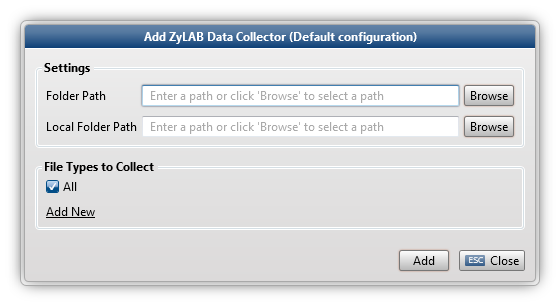

The ZyLAB Data Collector collects data indexed with ZyLAB from the ZyLAB data directory or any other location that has the Index Data structure (Electronic, TIFF, TXT, XML, XmlFields). It will combine files that belong together, for example ZyLAB TXT and TIFF files. Also, field values in XML Wrappers will be collected.
Note: Database fields are not supported by this collector.

Settings The Folder Path is the path to the folder of the indexed data (for example, \\Computername\ZyLAB Data\Index Data\Index01).
The Local Folder Path is the path that is shown in the XML Wrapper (for example, C:\ZyLAB DATA\Index Data\IndexName\). This path is necessary to indicate that certain ZyLAB files (for example, TXT and TIFF) belong together. Open an .xml file in the \\Index Data\IndexName\XmlFields folder to view the local folder path.
File Types to Collect Select the appropriate File Groups. To create new File Groups, click Add New. For more information on how to define File Groups, see Define File Groups.